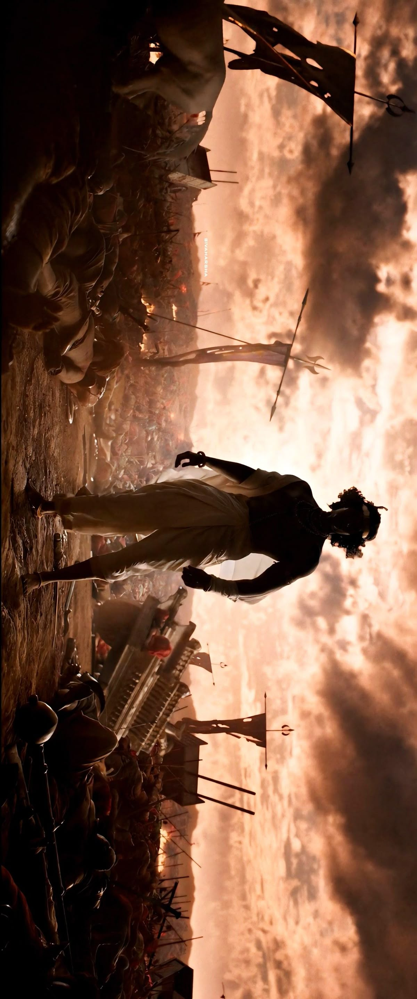
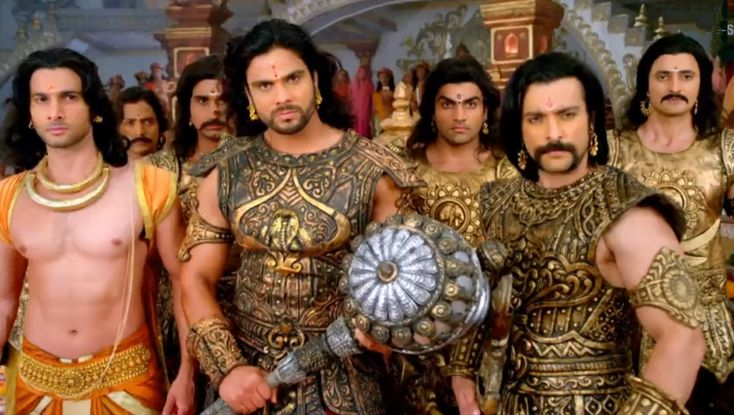
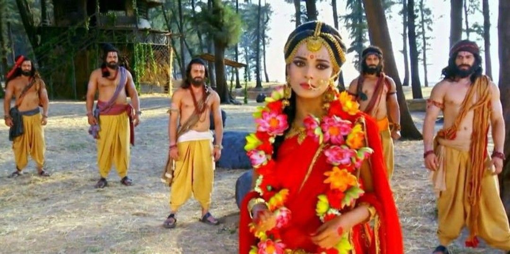
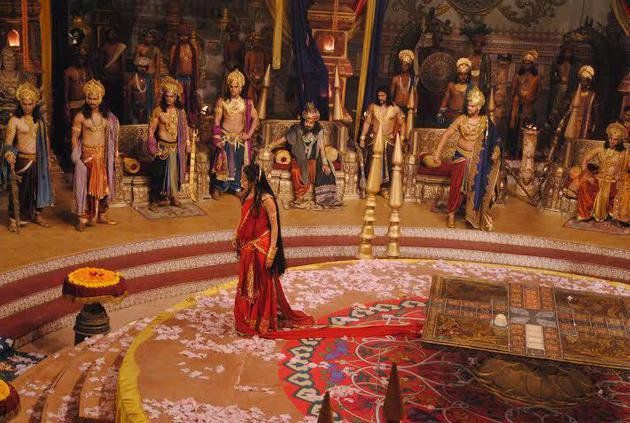
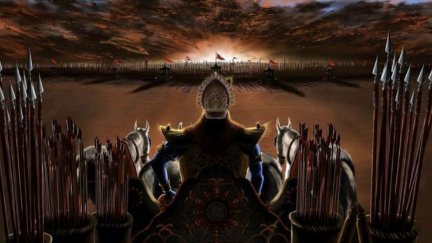
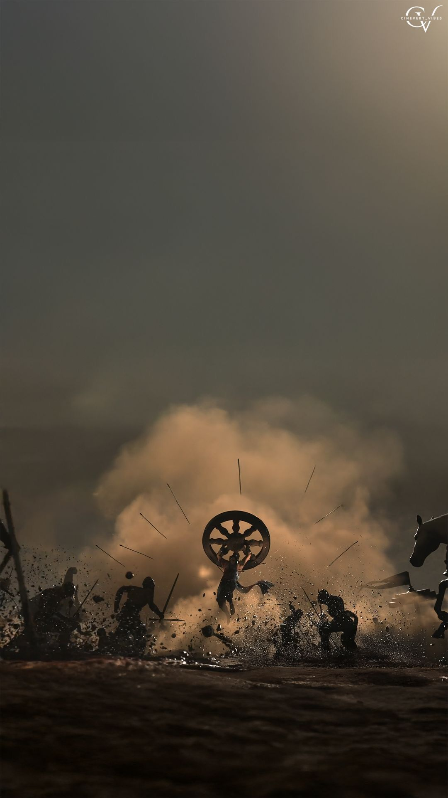

Key Events in the Epic
Origins
The story begins with King Shantanu of the Kuru dynasty who marries Ganga. She bears him eight sons but drowns seven of them. The eighth son is Bhishma, who later takes a vow of celibacy to ensure his father can remarry.
After Shantanu's death, the kingdom passes to his son Vichitravirya, who dies childless. His mother Satyavati asks sage Vyasa to father children with Vichitravirya's widows. This results in the birth of Dhritarashtra (who is blind) and Pandu.
Birth of the Cousins
Dhritarashtra marries Gandhari, who blindfolds herself for life to share her husband's fate. They have 100 sons (the Kauravas), with Duryodhana being the eldest.
Pandu marries Kunti and Madri. Due to a curse, he cannot father children himself. Kunti uses a boon to summon gods and bears three sons: Yudhishthira, Bhima, and Arjuna. Madri bears twins Nakula and Sahadeva. These five brothers are known as the Pandavas.
Early Conflicts
After Pandu's death, the Pandavas return to Hastinapura and are raised alongside their cousins. Duryodhana grows jealous of the Pandavas, especially Bhima's strength and Arjuna's skills.
Drona becomes the teacher of the princes. The animosity between the cousins grows, with Duryodhana making several attempts to kill the Pandavas, including burning their house of lac.
Marriage to Draupadi
Image: Arjuna wins Draupadi by shooting the fish target
The Pandavas escape and live in disguise. They attend the swayamvara (marriage ceremony) of Princess Draupadi. Arjuna wins her hand, but due to a misunderstanding, all five brothers end up marrying her.
The Pandavas return to Hastinapura, and the kingdom is divided. They establish their capital at Indraprastha and prosper under Yudhishthira's rule.
The Game of Dice
Image: The dice game between Yudhishthira and Duryodhana
Duryodhana, still envious, invites Yudhishthira to a game of dice. Yudhishthira loses everything, including his kingdom, his brothers, and even Draupadi.
Draupadi is humiliated in court when Dushasana attempts to disrobe her, but she is saved by Krishna's divine intervention. The Pandavas are exiled for 13 years, including 12 years in the forest and 1 year in disguise.
The Kurukshetra War
After completing their exile, the Pandavas demand their kingdom back, but Duryodhana refuses. Lord Krishna attempts to mediate but fails.
The epic 18-day war begins on the field of Kurukshetra. The armies of the Pandavas and Kauravas, comprising all the kings and warriors of the land, face each other in battle.
The Bhagavad Gita

Just before the war begins, Arjuna has doubts about fighting his own family. Krishna, serving as his charioteer, delivers the Bhagavad Gita, a spiritual discourse on duty, righteousness, and divine nature.
Krishna reveals his universal form to Arjuna and convinces him to fulfill his duty as a warrior, regardless of personal attachments.
The War's End
The war sees the fall of great warriors on both sides, including Bhishma, Drona, Karna, and all 100 Kauravas. The Pandavas emerge victorious, but at a terrible cost.
Yudhishthira becomes king of Hastinapura. After ruling justly for many years, the Pandavas retire to the Himalayas, leaving the kingdom to their grandson Parikshit.